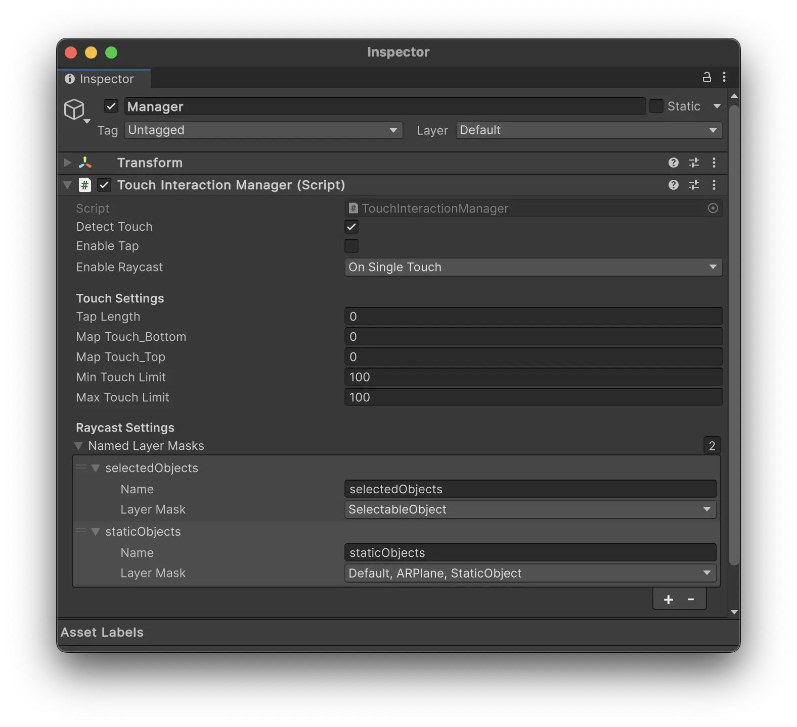
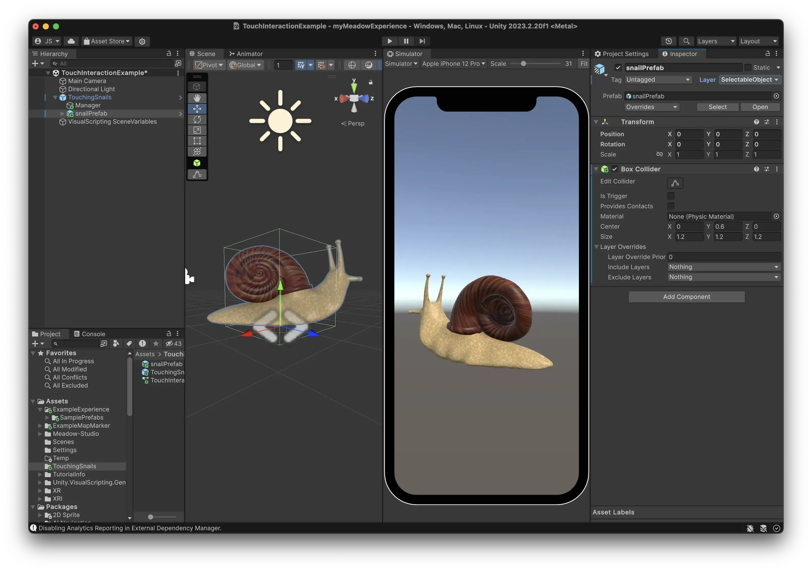
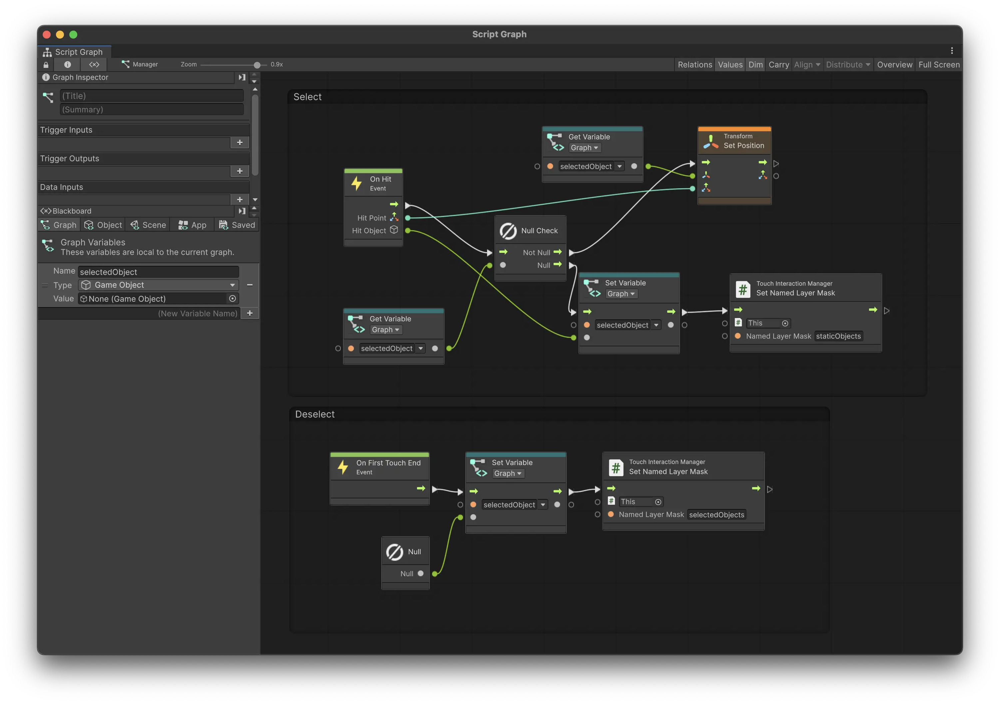
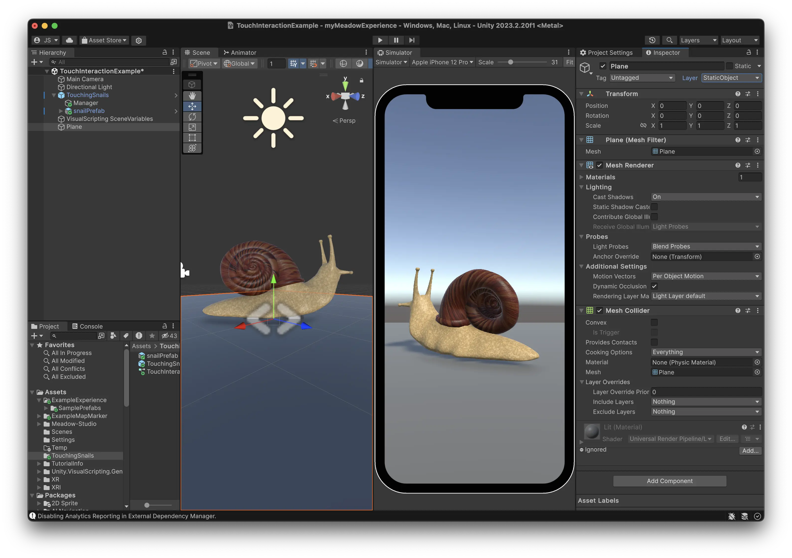
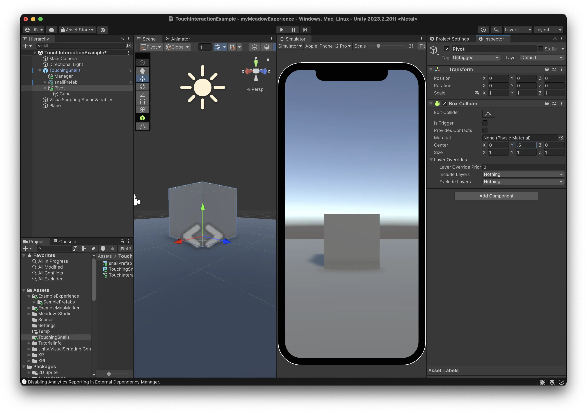
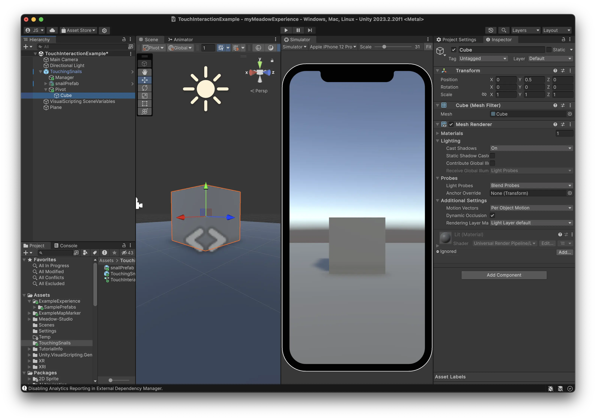

Touch Interaction
The Touch Interaction Manager allows you to use touches from the user’s device screen to manipulate your experience. This can be used for various interactive elements such as chess games, meditations where you stack snails, or intricate escape rooms.
Documentation
Touch Interaction Manager Properties
- Detect Touch:
bool- Enable or disable touch detection. - Enable Tap:
bool- Enable or disable tap detection. - Enable Raycast:
RaycastFlag- Set the raycast mode (None, OnSingleTouch, OnMultipleTouch).
Touch Settings
- Tap Length:
float- Duration of a tap in seconds (e.g., 0.1 = 100 ms). It’s recommended to keep this value between 200 and 400. - Map Touch Bottom:
float- Maps touch.y up from bottom. Essentially moves the touch point slighlty higher on the screen, which is useful for use cases where the user needs to see what they do. - Map Touch Top:
float- Maps touch.y down from top. - Min Touch Limit:
float- Screen Y limit below which raycasts are not sent. - Max Touch Limit:
float- Screen X limit above which raycasts are not sent.
Raycast Settings
- Named Layer Masks:
List<NamedLayerMask>- The list of different layer masks that you will use for raycasting.
Touch Events
- OnHit: Triggered when a raycast from the first touch hits something in world space.
- Outputs:
hitPoint: ValueOutput - The point in world space where the ray hit.hitObject: ValueOutput - The object that was hit by the ray.
- Outputs:
- OnMultipleHits: Triggered when several touch fingers hit things in world space.
- Outputs:
hitPoints: ValueOutput (List) - The points in world space where the rays hit.hitObjects: ValueOutput (List) - The objects that were hit by the rays.
- Outputs:
- OnNoHit: Triggered when a raycast from the first touch gets no hit.
- Outputs:
Touch: ValueOutput - Information about the touch that didn’t result in a hit.
- Outputs:
-
OnFirstTouchEnd: Triggered when the first registered touch ends.
-
OnSecondTouchEnd: Triggered when the second touch ends.
- OnTap: Triggered when a tap is detected.
- Outputs:
hitPoint: ValueOutput - The point in world space where the tap occurred.hitObject: ValueOutput - The object that was tapped.
- Outputs:
- OnTouch: Gives you direct access to all touches from the screen.
- Outputs:
Touches: ValueOutput (List) - Information about all current touches.
- Outputs:
Manual
Let’s create a simple game where you can move a snail around using touch input.
Set up Touch Interaction
- Add the
Touch Interaction Managercomponent to any game object in your prefab.- Enable “Detect Touch.”
- Set “Enable Raycast” to “OnSingleTouch” (we don’t need to track raycasts from multiple fingers.)
- Add two named layer masks: one for the selected object and one for the static objects. Assign the objects to the appropriate layers.

Note: If you can’t see many layers in the dropdown, you can add more layers in the Tags and Layers settings in Unity. Layers from 10 and up are available for use in Meadow.
Add for example:
- SelectableObjects (10) - For the snail object.
- StaticObjects (11) - For the ground plane.
Meadow uses layer 9 for AR planes, and 0 for the default layer. Make sure to include these in your layer mask if you want to raycast against them. To include layer 9 you need to create that layer in the Tags and Layers settings in Unity.
Add Your Object
- Add your snail object as a sibling to the manager.
- Set it to one of the layers in the layer mask for selected objects.
- Ensure it has a collider component. The raycast hits are registered against colliders.

Add Visual Scripting
- Add a Script Machine component to your manager object.
- Create a new Script Graph and assign it to the manager.
-
Open the Script Graph and add these nodes:
a. Create a graph variable of type GameObject, name it “selectedObject”.
b. Add an OnHit event node:
- Add a null check for the selectedObject.
- If it’s null, assign the hit object (from hitObject output) to selectedObject.
- We have now selected the snail and instead want to raycast against the ground. Change the layer mask we register raycasts against to StaticObject.
- If it’s not null, set the position of the selectedObject to the hit position (from hitPoint output) from the OnHit event.
c. Add an OnFirstTouchEnd event node:
- Set the selectedObject variable to null.
- Change the layer mask back to SelectedObject so we can select the snail again.

Tip: Press ‘cmd’ and drag to create an group around a set of nodes. This is very useful for organizing your graph.
Set Up the Environment
- Add a plane to your scene as a stand-in for AR planes.
- Set the plane to the same layer as defined in StaticObjects.
- This plane is just for testing in the Unity editor so keep it outside of your prefab.

Testing Your Game
- To register touch events in the Unity editor, set the Game view to “Simulator”.
- Play the scene and try moving the snail around by pressing and dragging it around on the plane.
This basic setup can be easily expanded to create more complex interactions. Try setting up chess game that can be played in AR!
Common Issues
The object sinks into the ground when moved
- The object will be moved to its pivot point. If the pivot is at the midpoint of the model on the Y-axis, the object may appear to sink into the ground when moved.
- To fix this, set your object as a child of an empty GameObject and adjust its position upwards. Make sure to put the collider on the child object, as it’s the object with the collider that is returned by the raycast hit.
Pivot: 
Object: 